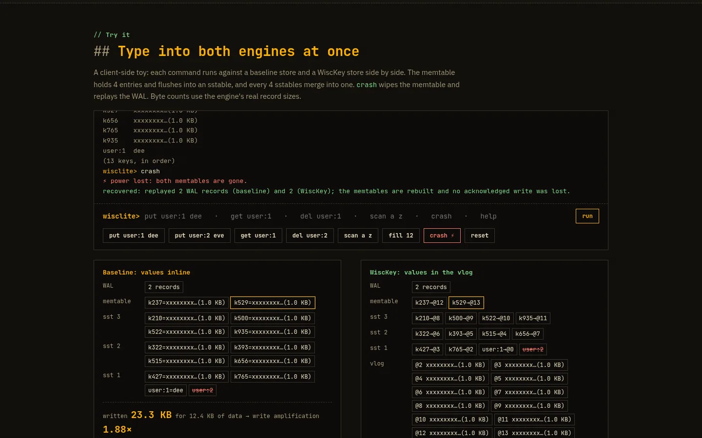
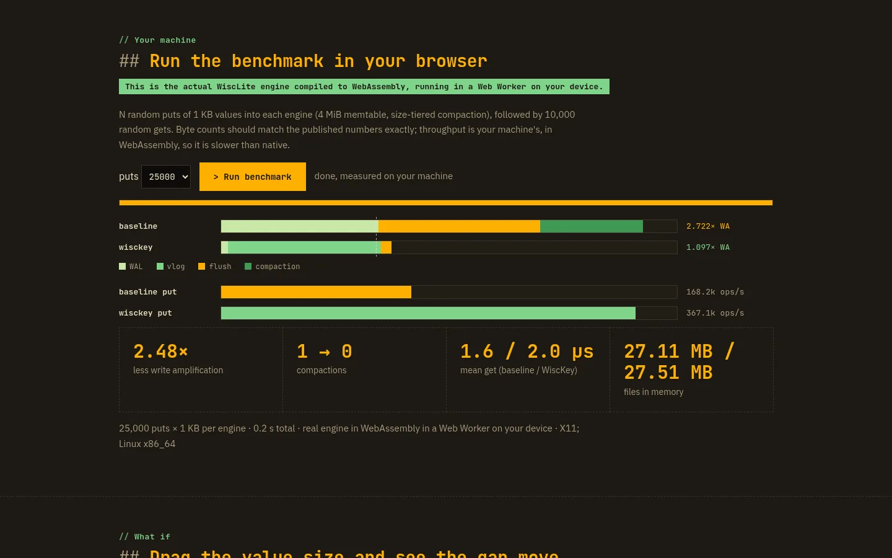
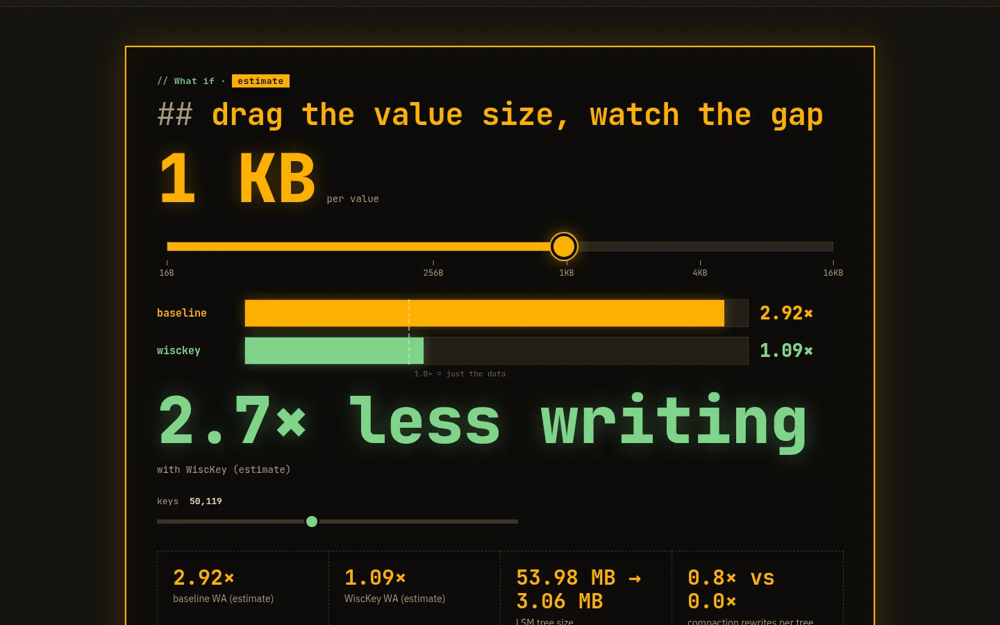

Tech project
WiscLite
A Rust LSM-tree key-value store that separates keys from values, after the WiscKey paper (USENIX FAST ’16), with an inline-value baseline mode to measure the difference.



crash drops the engine without flushing, and reopening replays the WAL.">crash drops the engine without flushing, and reopening replays the WAL.



- Values are appended once to a checksummed value log; the LSM-tree keeps only key → (offset, length) pointers.
- WAL with crash recovery, sorted SSTables with Bloom filters, size-tiered compaction, value-log GC and an atomic MANIFEST as the commit point.
- In the 500,000-put benchmark, write amplification was 1.16× versus 4.55× for the inline baseline; range scans are slower, the paper’s known cost.
- The site runs the actual Rust engine compiled to WebAssembly: an interactive Try-it console that demonstrates a crash and WAL replay, an in-browser benchmark, and sliders that estimate write amplification.
- CLI plus a localhost HTTP server with a JSON API and a metrics dashboard.
- 22 tests covering storage, crash recovery, compaction, GC and the HTTP API; the README lists the limitations openly.